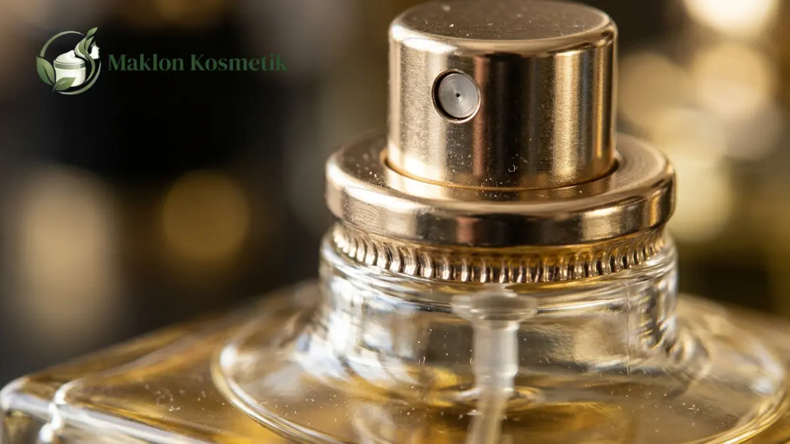

Bandingkan Kemasan Botol Parfum Kaca 30ml vs 50ml untuk Brand Premium

Daftar Isi Artikel Buka/Tutup
- Apa Perbedaan Utama Botol Parfum Kaca 30ml dan 50ml?
- Mana yang Lebih Cocok untuk Brand Premium, 30ml atau 50ml?
- Kapan Botol 30ml Menjadi Pilihan yang Lebih Bijak?
- Kapan Botol 50ml Lebih Menguntungkan?
- Bagaimana Ukuran Botol Mempengaruhi Biaya Produksi Maklon?
- Apa yang Perlu Diperiksa pada Kualitas Botol Parfum Kaca Premium?
- Strategi Menggabungkan Dua Ukuran dalam Satu Lini Produk
- Pertanyaan Umum (FAQ)
Ringkasan Poin Inti
- Botol 30ml menekan beban modal awal, portabel dibawa bepergian, dan ideal untuk fase uji coba respon pasar.
- Botol 50ml menyajikan kesan kemewahan yang mantap di genggaman tangan serta lebih ekonomis per mililiter cairan.
- Kualitas semprotan pompa crimp kedap udara dan ketebalan dasar kaca menentukan persepsi kemewahan secara nyata.
- Kombinasi kedua ukuran memungkinkan brand menjangkau pembeli baru sekaligus memanjakan pelanggan loyal setia.
Apa Perbedaan Utama Botol Parfum Kaca 30ml dan 50ml?
Saat membandingkan kemasan botol parfum kaca ukuran 30ml dan 50ml, pertimbangan tidak sebatas selisih kapasitas volume 20 mililiter semata di atas lembar spesifikasi.
Ukuran 30ml tampil lebih kompak dan ringan, menjadikannya pilihan favorit konsumen yang gemar membawa parfum di dalam tas jinjing untuk disemprotkan sewaktu-waktu.
Sebaliknya, botol 50ml menghadirkan bobot kaca yang tebal dan kokoh di genggaman tangan. Ukuran ini diakui secara luas oleh pasar internasional sebagai standar baku parfum botolan meja rias.
Dari sudut pandang produksi, kedua ukuran botol sering kali dapat memanfaatkan diameter leher (neck finish) yang serupa, sehingga tipe pompa sprayer dapat diseragamkan.
Mana yang Lebih Cocok untuk Brand Premium, 30ml atau 50ml?
Brand wewangian premium tidak hanya menjual wangi cairan, melainkan pengalaman emosional kemewahan sejak pertama kali konsumen membuka kotak dus luar produk.
Botol 50ml memberikan bidang penempelan label yang lebih luas untuk mengekspresikan tipografi merek, sentuhan hot stamping emas, dan ornamen visual artistik yang memikat.
Kendati demikian, ukuran 30ml tetap dapat memancarkan aura kemewahan kelas atas jika menggunakan bahan kaca kristal berkadar kejernihan tinggi dengan bagian dasar yang tebal.
Banyak brand wewangian niche global sengaja memilih kapasitas 30ml agar konsumen dapat mengoleksi beberapa varian aroma tanpa harus terbebani harga eceran yang terlalu tinggi.

Kapan Botol 30ml Menjadi Pilihan yang Lebih Bijak?
Ukuran 30ml sangat bijak dipilih ketika brand Anda sedang menjajaki segmen pasar baru dengan alokasi modal awal yang terukur dan ingin mempercepat perputaran inventori.
Harga eceran produk 30ml yang ramah di kantong menurunkan keraguan pembeli pemula untuk mencoba aroma baru secara impulsif melalui kanal belanja daring (e-commerce).
Kapasitas ini juga sangat cocok dijadikan paket bingkisan (discovery set) yang memuat beberapa varian wangi sekaligus dalam satu kemasan kotak hadiah istimewa.
"Kemewahan sebuah botol parfum tidak diukur dari seberapa besar volumenya, melainkan dari presisi bobot kaca di tangan dan kehalusan kabut semprotannya."
Kapan Botol 50ml Lebih Menguntungkan?
Botol 50ml menjadi pilihan paling menguntungkan saat Anda memiliki varian aroma signature yang sudah terbukti memiliki basis penggemar setia dan permintaan pasar tinggi.
Konsumen loyal lebih menyukai ukuran 50ml karena frekuensi pemakaian rutin setiap hari membuat botol kecil cepat habis dalam hitungan beberapa minggu saja.
Dari sudut pandang margin bisnis, harga jual botol 50ml yang lebih tinggi memberikan ruang keuntungan bersih per transaksi yang lebih sehat bagi pemilik brand.
Bagaimana Ukuran Botol Mempengaruhi Biaya Produksi Maklon?
Kenaikan volume cairan dari 30ml ke 50ml menaikkan biaya konsentrat minyak wangi dan alkohol denaturasi, serta menambah dimensi ukuran cetak kotak kemasan.
Namun yang menarik, komponen kemasan seperti tutup botol magnetik, pompa crimp, serta biaya registrasi izin edar BPOM bernilai sama persis untuk kedua ukuran tersebut.
Hal ini menyebabkan biaya pokok produksi (HPP) per mililiter cairan pada botol 50ml menjadi lebih hemat dibanding botol 30ml, sehingga brand memiliki fleksibilitas harga promo.
Apa yang Perlu Diperiksa pada Kualitas Botol Parfum Kaca Premium?
Periksalah tingkat kejernihan dinding kaca botol agar terbebas dari gelembung udara mikroskopis, goresan cetakan, atau ketebalan dasar kaca yang miring sebelah.
Pemilihan jenis pompa sprayer sangat menentukan kualitas produk akhir. Pompa jenis crimp yang dipasang dengan mesin pres khusus jauh lebih aman dibanding sprayer ulir putar biasa.
Pompa crimp menjamin botol 100 persen kedap udara, mencegah alkohol merembes saat pengiriman lewat pesawat udara, dan melindungi aroma wangi dari oksidasi udara luar.
Lakukan uji semprotan untuk memastikan nozzle menghasilkan kabut halus merata (fine mist) tanpa ada tetesan cairan besar yang membasahi pakaian konsumen secara kasar.
Strategi Menggabungkan Dua Ukuran dalam Satu Lini Produk
Strategi terbaik yang diterapkan brand parfum sukses adalah menghadirkan kedua ukuran secara berjenjang guna menjangkau dua segmen pasar yang berbeda sekaligus.
Tempatkan ukuran 30ml sebagai pintu gerbang akuisisi pelanggan baru yang ingin mencoba kecocokan aroma dengan harga yang terjangkau.
Ketika pelanggan sudah jatuh cinta pada aroma tersebut, tawarkan botol 50ml dengan harga per mililiter yang lebih ekonomis sebagai pendorong loyalitas jangka panjang.
Ingin Konsultasi Pemilihan Botol Parfum & Formulasi Maklon?
Temukan koleksi botol kaca parfum premium 30ml dan 50ml berstandar internasional lengkap dengan sprayer crimp anti-bocor di Maklon Kosmetik ID.
Pertanyaan Umum (FAQ)
.webp)
Mega Anggun (Ega)
Praktisi & Konsultan Formulasi Kosmetik di Maklon Kosmetik ID. Berpengalaman mendampingi ratusan brand owner merintis produk kecantikan berstandar BPOM & Halal.